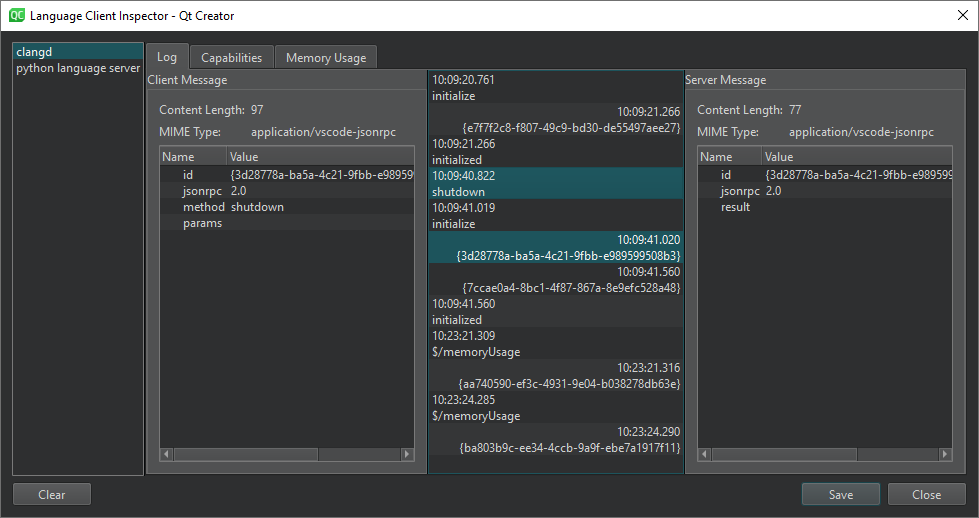
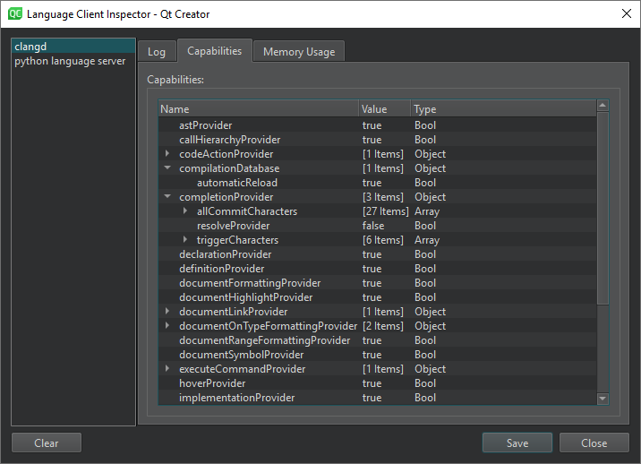
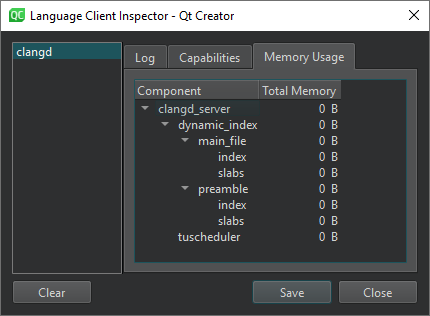

Using Language Servers
For several programming languages, a language server is available that provides information about the code to IDEs as long as they support communication via the language server protocol (LSP). This enables the IDE to provide the following services:
- Code completion
- Sending document formatting requests to the language server to automatically format documents using the settings specified in Edit > Preferences > Text Editor > Behavior
- Highlighting the symbol under cursor
- Viewing function tooltips
- Semantic highlighting, as defined in Proposal of the semantic highlighting protocol extension
- Navigating in the code by using the locator or moving to the symbol definition
- Inspecting code by viewing the document outline in the Outline view or in the Symbols list on the editor toolbar
- Finding references to symbols
- Renaming the symbol under cursor
- Code actions
- Displaying diagnostics from the language server as tooltips. You can also select a code range to display diagnostics for.
By providing a client for the language server protocol, Qt Creator can support the above features for several other programming languages besides C++. However, the client does not support language servers that require special handling.
Adding MIME Types for Language Servers
Qt Creator uses the MIME type of the file to determine which language server to request information from when you open a file for editing. Add new MIME types or file patterns to match language servers. If you do not set at least one MIME type or file pattern, no files will be sent to the language server. This is done to avoid unnecessary traffic and inaccurate information, as files are only sent to the language server if they are known to be handled by it. For more information about how Qt Creator uses MIME types, see Editing MIME Types.
Specifying Settings for Language Clients
Qt Creator supports adding a Java language server for Android development. A Python language server is added by default and you can edit its preferences. For other languages, you can add generic stdIO language servers.
To add language servers, select Edit > Preferences > Language Client > Add (or Qt Creator > Preferences > Language Client > Add on macOS).
To enable a language server, select the check box next to the language server name and set server preferences.
To remove language servers from the list, select Delete.
Generic StdIO Language Server
To add a generic language server:
- Select Edit > Preferences > Language Client > Add > Generic StdIO Language Server to add a generic language server.

- In the Name field, enter a name for the language server. Select the
 (Variables) button to use a variable for the server name. For more information, see Using Qt Creator Variables.
(Variables) button to use a variable for the server name. For more information, see Using Qt Creator Variables. - In the Language field, select Set MIME Types to select the MIME types of the files to send to the language server. In the field below, you can enter file patterns to extend the MIME types, separated by semicolons.
- In the Startup behavior field, select whether the language server is started when Qt Creator starts or when a project or file with a matching MIME type is opened. General Messages displays information about the connection to the language server.
- In the Initialization options field, you can add language server specific JSON attributes to pass to an
initializerequest. - In the Executable field, enter the path to the language server executable.
- In the Arguments field, enter any required command line arguments. Select Variables to use variables as arguments.
Java Language Server
To add a Java language server:
- Select Edit > Preferences > Language Client > Add > Java Language Server to add a Java language server.

- In the Name field, enter a name for the language server. Select the (Variables) button to use a variable for the server name. For more information, see Using Qt Creator Variables.
- In the Java field, enter the path to the Java executable.
- In the Java Language Server field, enter the path to the Java language server
.jarfile.
Python Language Server
To set preferences for Python language servers:
- Select Edit > Preferences > Python > Language Server Configuration to select the Python language server plugins to use.

- Select Advanced to configure the plugins.

For a complete list of configuration options, see Python Language Server Configuration.
To disable the Python language server, deselect Use Python Language Server.
QML Language Server
Qt 6.4 ships with the qmlls language server that provides completion and warnings for QML. To set it up as a Generic StdIO Language Server, select text/x-qml and application/x-qt.ui+qml as MIME types, and <Qt Installation>/bin/qmlls as executable.
If the language server is used together with the QmlJSEditor plugin, duplicate suggestions and warnings might be shown. To avoid this, disable the editor plugin as described in Enabling and Disabling Plugins.
Supported Locator Filters
The locator enables you to browse not only files, but any items defined by locator filters. The language client plugin supports the following locator filters:
- Locating symbols in the current project (
:) - Locating symbols in the current document (
.) - Locating class (
c), enum, and function (m) definitions in your project
Inspecting Language Clients
Qt Creator sends messages (Requests) to the language server and receives responses that contain the requested information if the language server is capable of handling the requests. To inspect the communication between Qt Creator and language servers and view server capabilities, select Tools > Debug Qt Creator > Inspect Language Clients.

The dialog shows a list of running language servers. The value of the Startup behavior field in the language server preferences determines when the server is started. The information displayed depends on the language server.
Log displays additional information about the selected log entry. You can see the Content length and MIME type of a Client Message and Server Message, as well as inspect the data sent between Qt Creator and the language server.
To remove old entries, select Clear.
Capabilities
In Capabilities, you can check whether a language server is capable of a specific task. You cannot modify the server capabilities in this dialog.
You can view the Name, Value, and Type of the capability.

For some language servers, Dynamic Capabilities lists the Methods and Options available.
Memory Usage
For a clangd server, you can inspect the total amount of memory used by a particular component in Memory Usage.

Reporting Issues
The language server client has been mostly tested with Python and Java. If problems arise when you try them or some other language, please select Help > Report Bug to report them in the Qt Project Bug Tracker. The reports should include Qt Creator console output with the environment variable QT_LOGGING_RULES=qtc.languageclient.*=true set.